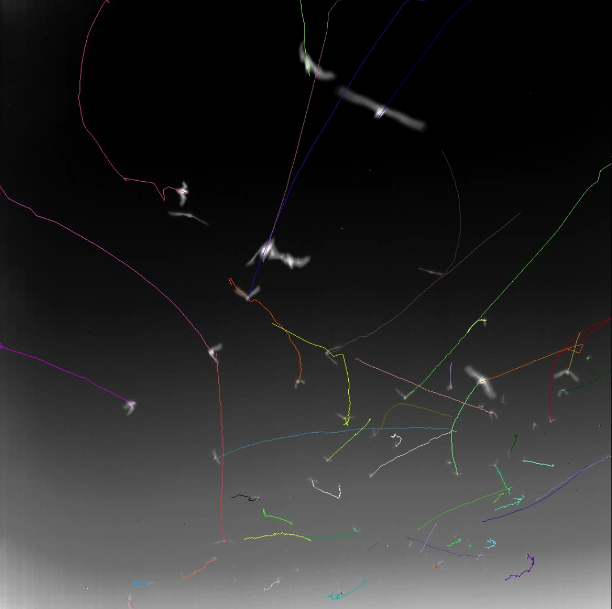
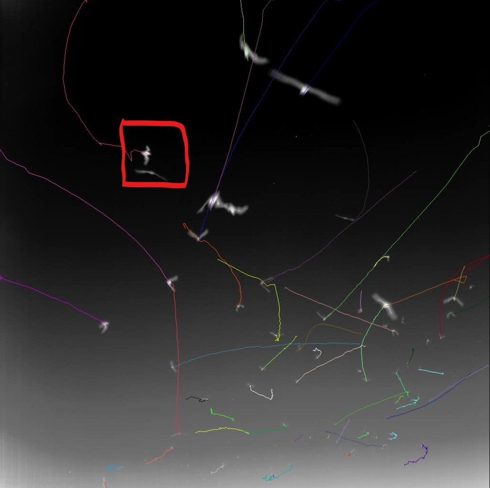

Problem Definition
The goal of this homework is to design and implement algorithms to track multiple objects.
Method and Implementation
We mainly applied the following techniques in this project:
1. alpha-beta filter (bat)
2. greedy matching algorithm (bat)
3. kalman filter (cell)
4. hungarian algorithm (cell)
There are 3 major steps for bat dataset:
(1) Get the bat locations of the current frame from the given segmentation for the bat dataset.
(2) Predict the bat locations of the next frame according to alpha-beta filter.
(3) Apply greedy algorithm to match the nearest bat in the next frame.
There are 3 major steps for cell dataset:
(1) Perform segmentation to detect all the cells in each given image, and save center locations of all the detected cells and image mask as well.
(2) Predict the cell locations in the next frame using kalman filter.
(3) Apply Hungarian algorithm for cells assignment.
Experiments
Here we show successful and challenging examples of the bat tracking algorithm. Panel A is the successful case of multiple objects with various velocities. Panel B is the bad case where multiple objects occlude or merge together.
| A: Successful Case | B: Challenging Case |
|  |
Results
Videos | |
| Bat dataset | |
|---|---|
| Cell dataset | |
Discussion
1. Show your tracking results on some portion of the sequence. In addition to showing your tracking results on an easy portion of the data, identify a challenging situation where your tracker succeeds, and a challenging situation where your tracker fails.
Our tracking results are mostly successful and are presented by the videos above. When there are multiple objects with various velocities in frames, our algorithm works well. When there are multiple objects merge (touch or occlude) together, our algorithm sometimes fails because it consider the merged objects as a single object.
A Failed Case:
| bad case | marked bad case | |
|  | As shown in this example, bats are merged in the red bounding box, and the bats are detected as one. |
2. How do you decide to begin new tracks and terminate old tracks as the objects enter and leave the field of view?
If an object in the current frame does not exist in the last frame, we consider this case as a new object enter the field of view.
If an object of the last frame cannot find the nearest neighbor in the current frame (for example, the objects in the current frame are all matched with other objects in the last frame), we consider this case as the object leave the field of view.
3. What happens with your algorithm when objects touch and occlude each other, and how could you handle this so you do not break track?
For bat dataset, if two objects touch or occlude each other, our algorithm will consider them as a single object. Same case for the cells. In fact, for cell dataset, the most challenging part is segmentmentation instead of tracking. When two cells touch, they are masked as one object. As a result, our algorithm fails in this case. To address this issue in future, we first need to improve the detector. We can train a neural network to detect individual bat or cell.
4. What happens when there are spurious detections that do not connect with other measurements in subsequent frames?
In this case, the spurious detections will be ignored and removed in the subsequent frames.
5. What are the advantages and drawbacks of different kinematic models: Do you need to model the velocity of the objects, or is it sufficient to just consider the distances between the objects in subsequent frames?
We need to model the velocity of the objects so that the predicted values are more accurate. It might be sufficient to just consider the distances between the objects in subsequent frames if the velocities are pretty small and we just consider two frames at a time. However, it is insufficient in most cases such as high velocities and using multiple hypothesis tracking.
Credits and Bibliography
Zhongping and Yiwen complete the code and report together. Zhongping works more on bat dataset and Yiwen works more on cell dataset.
Some reference:
For labelling connected components: https://www.pyimagesearch.com/2021/02/22/opencv-connected-component-labeling-and-analysis/
For alpha-beta filter: https://en.wikipedia.org/wiki/Alpha_beta_filter
For kalman filter:
https://docs.opencv.org/master/dd/d6a/classcv_1_1KalmanFilter.html#aa710d2255566bec8d6ce608d103d4fa7
For Hungarian assignment:
https://docs.scipy.org/doc/scipy-0.18.1/reference/generated/scipy.optimize.linear_sum_assignment.html